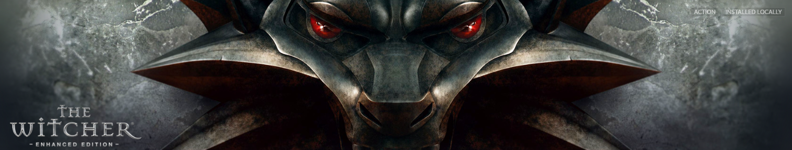
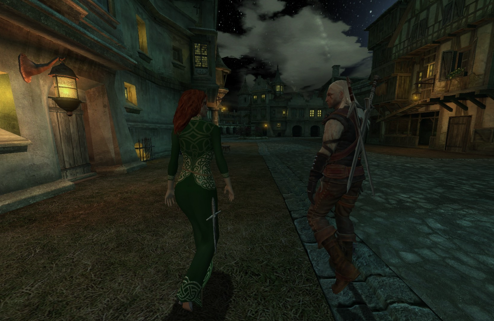

Though it is an old game I'd say The Witcher is still worth playing for fans of the series despite it's jankiness.
The story is solid. The main quest keeps you humming along interested but there are many side quests that influence and add to the main quest as well. The quests in general are interesting and a lot of them feature moral grey zone decisions where there is no right answer and your choice relies on your personality and extra information you have picked up along the way. There are multiple outcomes that depend on the choices you make.
The environments look pretty nice still, I was playing with mods however but they do capture the feeling of the setting pretty well.
The characters are interesting and fairly well written.
The gameplay is however very janky and there is a lot of running back and forth in quests that felt like it didn't need to be there.
The combat is the jankiest of all. It's ok ish but a lot of the time when you click it won't do anything and your not sure why, it's awkward moving your cursor over an enemy and clicking every time you want geralt to continue the combo. The dodging system is awkward. I think the main problem is they designed the combat to work with both over the shoulder and top down camera views but it doesn't work very well with either.
I played on easy mode with a few mods to help and I wasn't focusing on leveling up my character or gear. By the end of the game I need to install an infinite health mod to progress. It took me 30 hrs to beat mainly doing the main quests.
I'd recommend it for Witcher Fans who want more Witcher but I would say get it when its on sale for like £2.
